★Graphic Tools Guide
★セガペインタユーザーズマニュアル/
★Graphic Tools Guide
★セガペインタユーザーズマニュアル/
▲
戻る｜
進む▼
セガペインタユーザーズマニュアル/2.メニュー
ファイル｜
編集｜
イメージ｜
オプション｜
特別｜
ウィンドウ
■オプションメニュー
- 作業中の書類の表示設定や、編集機能の各種設定を行います。
また、書類の大きさやカラー、パレットデータの変更もここで行います。
- ●書類サイズ
- 現在作業中の書類のサイズを変更します。
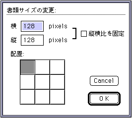
- 縦：
横：書類サイズの変更値を入力します。
- □縦横比を固定：横また縦のサイズを変更した場合、元の書類サイズの縦横比を維持するように入力されていない側のサイズを自動的に調整します。
- 配置：サイズ変更後書類への画像データ配置位置をクリックで指定します。
- ●書類パレット
- 現在作業中の書類の基準パレットを変更します。
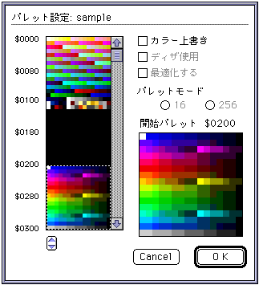
- カラーリスト上で変更したい位置をクリックして基準パレットを指定します。
- □カラー上書き：変更前の書類が持つパレットデータを指定されたパレット位置へ上書きします。
- ●パレット編集
- 選択範囲の画像のパレット情報を編集します。
詳細は、ドキュメント「4.カラー・パレット」を参照してください。
- ●カラー編集
- SegaPainterの管理するのカラーパレット情報を編集します。
詳細は、ドキュメント「4.カラー・パレット」を参照してください。
- ●表示倍率
- 画像を表示する際の倍率を指定します。
- x1：等倍で表示します。
- x2：2倍で表示します。
- x4：4倍で表示します。
- x8：8倍で表示します。
- ●グリッド表示
 G
G
- 現在作業中の書類に、一定単位の格子を表示します。
- ●モニタ表示位置
- 現在作業中の書類をモニタウィンドウに表示する位置を指定します。
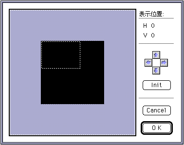
- 表示されたモニタ枠をドラッグで移動させて表示位置を指定します。
- カーソルボタン：ボタンクリックごとに、モニタ枠を縦横に移動させます。
- Init：表示位置を画像データの(0,0)の位置に初期化します。
- ●各種設定
- ツールパレットの各ツールや一部メニューの各機能の設定を行います。
- ◆鉛筆ツール
- 鉛筆ツールの形状やサイズを設定します。
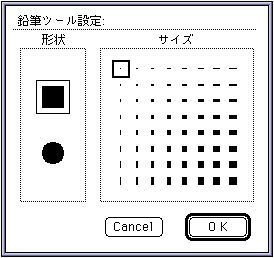
- 形状：鉛筆の形状を選択します。
- サイズ：鉛筆のサイズを選択します。
- ◆ブラシツール
- ブラシツールの形状やサイズを設定します。
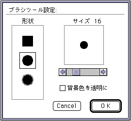
- 形状：ブラシの形状を選択します。
- サイズ：ブラシのサイズをスクロールバーで決定します。
- 背景色を透明に：背景色を透明にして描画します。
- ◆消しゴムツール
- 消しゴムツールの形状やサイズを設定します。
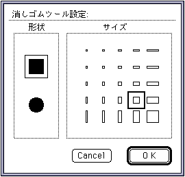
- 形状：消しゴムの形状を選択します。
- サイズ：消しゴムのサイズを選択します。
- ◆ラインツール
- ラインツールの太さや描画方法を設定します。
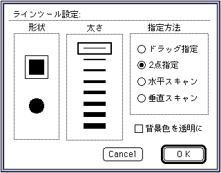
- 形状：ラインの形状を選択します。
- 太さ：ラインの太さを選択します。
- 指定方法：描画の指定方法を選択します。
- ドラッグ指定：ドラッグの始点と終点を結ぶ直線を描画します。
- 2点指定：クリックされた2点間を結ぶ直線を描画します。
- 水平スキャン：クリックされたポイントと同じパレットコードの連続領域に水平線描画します。
- 垂直スキャン：クリックされたポイントと同じパレットコードの連続領域に垂直線描画します。
- 背景色を透明に：背景色を透明にして描画します。
- ◆エアブラシツール
- エアブラシツールの太さや濃度を設定します。
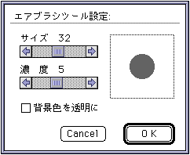
- サイズ：エアブラシのサイズをスクロールバーで指定します。
- 濃度：エアブラシの濃度をスクロールバーで指定します。
- 背景色を透明に：背景色を透明にして描画します。
- ◆長方形ツール
- 長方形ツールや長方形塗りつぶしツールの太さや描画方法を設定します。
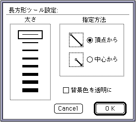
- 太さ： 長方形描画の太さを指定します。この設定は、長方形塗りつぶしツールには影響を与えません。
- 指定方法：描画の指定方法を選択します。
- 頂点から：ドラッグの始点と終点を頂点とした長方形を描画します。
- 中心から：ドラッグの始点を中心に、終点を頂点とした長方形を描画します。
- 背景色を透明に：背景色を透明にして描画します。
- ◆角丸長方形ツール
- 角丸長方形ツールや角丸長方形塗りつぶしツールの太さや描画方法を設定します。
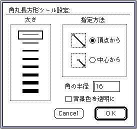
- 太さ： 角丸長方形描画の太さを指定します。この設定は、角丸長方形塗りつぶしツールには影響を与えません。
- 指定方法：描画の指定方法を選択します。
- 頂点から：ドラッグの始点と終点を頂点とした長方形に内接する角丸長方形を描画します。
- 中心から：ドラッグの始点を中心に、終点を頂点とした長方形に内接する角丸長方形を描画します。
- 角の半径：角丸の半径を指定します。
- 背景色を透明に：背景色を透明にして描画します。
- ◆楕円形ツール
- 楕円形ツールや楕円形塗りつぶしツールの太さや描画方法を設定します。
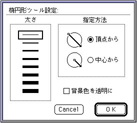
- 太さ：楕円形描画の太さを指定します。この設定は、楕円形塗りつぶしツールには影響を与えません。
- 指定方法：描画の指定方法を選択します。
- 頂点から：ドラッグの始点と終点を頂点とした長方形に内接する楕円形を描画します。
- 中心から：ドラッグの始点を中心に、終点を頂点とした長方形に内接する楕円形を描画します。
- 背景色を透明に：背景色を透明にして描画します。
- ◆選択ツール設定
- 選択ツールを、一定の単位に適用させたい場合に使用します。
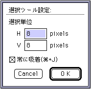
- 選択単位：吸着させる単位を指定します。
- 常に吸着：常に選択単位に吸着して動作します。
「+J」のショートカットが割当てられています。
- ◆グリッド設定
- グリッドの単位や色を設定します。
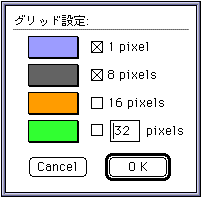
- 1 pixel：
- 8 pixel：
- 16 pixel：チェックされた各単位のグリッドを表示します。
- ？ pixel：入力された単位のグリッドを表示します。
- なお、各単位のグリッドカラーを変更する場合はカラーボックス部分をクリックしてカラーピッカーを呼び出してください。
▲
戻る｜
進む▼
★Graphic Tools Guide
★セガペインタユーザーズマニュアル/
Copyright SEGA ENTERPRISES, LTD., 1997